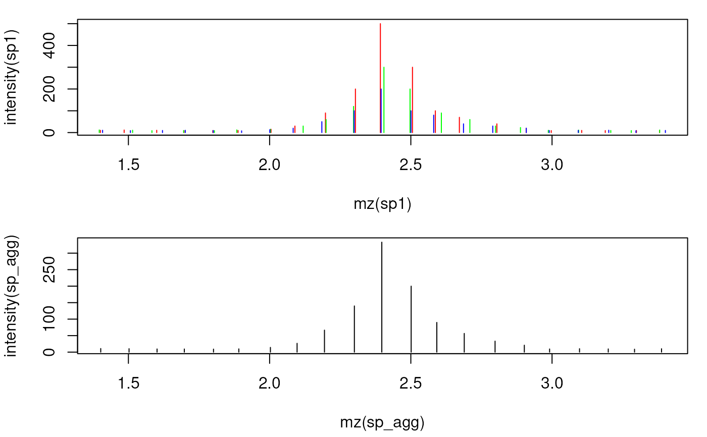

Combine peaks from several spectra into a single spectrum. Intensity and
m/z values from the input spectra are aggregated into a single peak if
the difference between their m/z values is smaller than mzd or smaller than
ppm of their m/z. While mzd can be used to group mass peaks with a single
fixed value, ppm allows a m/z dependent mass peak grouping. Intensity
values of grouped mass peaks are aggregated with the intensityFun, m/z
values by the mean, or intensity weighted mean if weighted = TRUE.
Usage
meanMzInts(
x,
...,
intensityFun = base::mean,
weighted = FALSE,
main = 1L,
mzd,
ppm = 0,
timeDomain = FALSE,
unionPeaks = TRUE
)Arguments
- x
listofSpectrumobjects.- ...
additional parameters that are passed to
intensityFun.- intensityFun
functionto aggregate the intensity values per m/z group. Should be a function or the name of a function. The function is expected to return anumeric(1).- weighted
logical(1)whether m/z values per m/z group should be aggregated with an intensity-weighted mean. The default is to report the mean m/z.- main
integer(1)defining the main spectrum, i.e. the spectrum which m/z and intensity values get replaced and is returned. By default the first spectrum inxis used.- mzd
numeric(1)defining the maximal m/z difference below which mass peaks are considered to represent the same ion/mass peak. Intensity values for such grouped mass peaks are aggregated. If not specified this value is estimated from the distribution of differences of m/z values from the provided spectra (see details).- ppm
numeric(1)allowing to perform a m/z dependent grouping of mass peaks. See details for more information.- timeDomain
logical(1)whether definition of the m/z values to be combined into one m/z is performed on m/z values (timeDomain = FALSE) or onsqrt(mz)(timeDomain = TRUE). Profile data from TOF MS instruments should be aggregated based on the time domain (see details). Note that a pre-definedmzdshould also be estimated on the square root of m/z values iftimeDomain = TRUE.- unionPeaks
logical(1)whether the union of all peaks (peak groups) from all spectra are reported or only peak groups that contain peaks that are present in the main spectrum (defined bymain). The default is to report the union of peaks from all spectra.
Value
Spectrum with m/z and intensity values representing the aggregated values
across the provided spectra. The returned spectrum contains the union of
all peaks from all spectra (if unionPeaks = TRUE), or the same number of
m/z and intensity pairs than the spectrum with index main in x (if
unionPeaks = FALSE. All other spectrum data (such as retention time etc)
is taken from the main spectrum.
Details
For general merging of spectra, the mzd and/or ppm should be manually
specified based on the precision of the MS instrument. Peaks from spectra
with a difference in their m/z being smaller than mzd or smaller than
ppm of their m/z are grouped into the same final peak.
Some details for the combination of consecutive spectra of an LCMS run:
The m/z values of the same ion in consecutive scans (spectra) of a LCMS run
will not be identical. Assuming that this random variation is much smaller
than the resolution of the MS instrument (i.e. the difference between
m/z values within each single spectrum), m/z value groups are defined
across the spectra and those containing m/z values of the main spectrum
are retained. The maximum allowed difference between m/z values for the
same ion is estimated as in estimateMzScattering(). Alternatively it is
possible to define this maximal m/z difference with the mzd parameter.
All m/z values with a difference smaller than this value are combined to
a m/z group.
Intensities and m/z values falling within each of these m/z groups are
aggregated using the intensity_fun and mz_fun, respectively. It is
highly likely that all QTOF profile data is collected with a timing circuit
that collects data points with regular intervals of time that are then later
converted into m/z values based on the relationship t = k * sqrt(m/z). The
m/z scale is thus non-linear and the m/z scattering (which is in fact caused
by small variations in the time circuit) will thus be different in the lower
and upper m/z scale. m/z-intensity pairs from consecutive scans to be
combined are therefore defined by default on the square root of the m/z
values. With timeDomain = FALSE, the actual m/z values will be used.
Note
This allows e.g. to combine profile-mode spectra of consecutive scans into
the values for the main spectrum. This can improve centroiding of
profile-mode data by increasing the signal-to-noise ratio and is used in the
combineSpectraMovingWindow() function.
See also
estimateMzScattering() for a function to estimate m/z scattering
in consecutive scans.
estimateMzResolution() for a function estimating the m/z resolution of
a spectrum.
combineSpectraMovingWindow() for the function to combine consecutive
spectra of an MSnExp object using a moving window approach.
Other spectra combination functions:
consensusSpectrum()
Examples
library(MSnbase)
## Create 3 example profile-mode spectra with a resolution of 0.1 and small
## random variations on these m/z values on consecutive scans.
set.seed(123)
mzs <- seq(1, 20, 0.1)
ints1 <- abs(rnorm(length(mzs), 10))
ints1[11:20] <- c(15, 30, 90, 200, 500, 300, 100, 70, 40, 20) # add peak
ints2 <- abs(rnorm(length(mzs), 10))
ints2[11:20] <- c(15, 30, 60, 120, 300, 200, 90, 60, 30, 23)
ints3 <- abs(rnorm(length(mzs), 10))
ints3[11:20] <- c(13, 20, 50, 100, 200, 100, 80, 40, 30, 20)
## Create the spectra.
sp1 <- new("Spectrum1", mz = mzs + rnorm(length(mzs), sd = 0.01),
intensity = ints1)
sp2 <- new("Spectrum1", mz = mzs + rnorm(length(mzs), sd = 0.01),
intensity = ints2)
sp3 <- new("Spectrum1", mz = mzs + rnorm(length(mzs), sd = 0.009),
intensity = ints3)
## Combine the spectra
sp_agg <- meanMzInts(list(sp1, sp2, sp3))
## Plot the spectra before and after combining
par(mfrow = c(2, 1), mar = c(4.3, 4, 1, 1))
plot(mz(sp1), intensity(sp1), xlim = range(mzs[5:25]), type = "h", col = "red")
points(mz(sp2), intensity(sp2), type = "h", col = "green")
points(mz(sp3), intensity(sp3), type = "h", col = "blue")
plot(mz(sp_agg), intensity(sp_agg), xlim = range(mzs[5:25]), type = "h",
col = "black")
